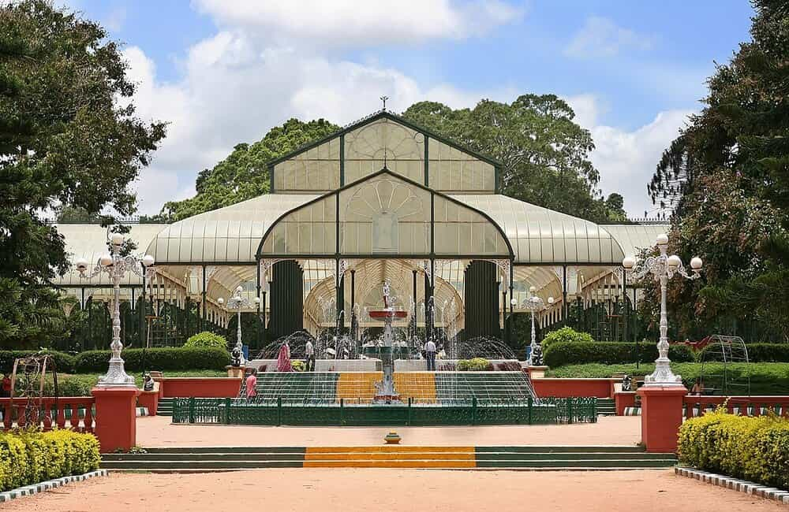
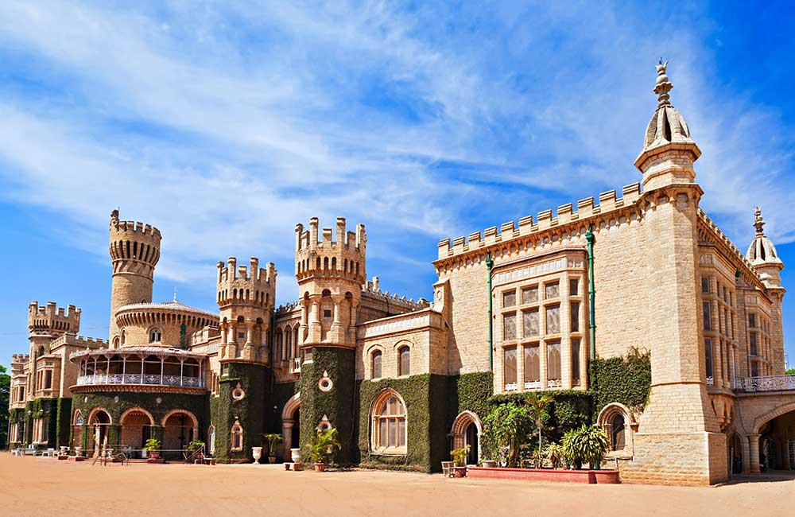

Cubbon Park is like a breath of fresh air in the bustling city of Bangalore. The 300-acre park is one of the most popular tourist places in Bangalore, brimming with greenery and tranquillity, and is great for a fun outing with the family or a leisurely stroll with that special someone. It is also a treasure trove of biodiversity with about 6,000 trees and plants, representing almost 100 species. Cubbon Park has the second largest aquarium in India, The Bangalore Aquarium. The Cubbon Park was first established in 1870 by Sri John Meade (acting Commissioner of Mysore). It is one of the best places to visit in Bangalore in one day.
The most popular place to visit in Bangalore among tourists.
Entry Fee: N/A
Timings: Morning till evening
Nearest Metro Station/Bus Stand: Dr. B.R. Ambedkar Station Vidhana Soudha Metro Station (75 metres)
Location: Kasturba Rd
Lalbagh Botanical Garden

Lalbagh Botanical Garden traces its origin to the 1760s, when the then-ruler of Mysore, Hyder Ali initiated the development of 240 acres of land as a private garden for the royal family. What you see today is a result of constant expansion and development carried out by the Tipu Sultan, the British, and other regional rulers over the years. People love it as it offers a respite from the fast-paced life Bangalore is synonymous with. Visitors recommend it as one of the best Bangalore tourist places to visit in the evening. It has 1,854 species of plants and a rock named The Lalbagh Rock which is estimated to be 3,000 million years old. For nature lovers, it is one of the best places to visit in Bangalore.
A famous picnic spot in Bangalore.
Entry Fee: ₹10
Timings:9:00 am to 6:00 pm
Nearest Metro Station/Bus Stand: Lalbagh (220 metres)
Location: Mavalli
Vidhan Soudha
The seat of the Government of Karnataka, Vidhana Soudha is a granite marvel which leaves observers spellbound by its sheer grandeur. Though there are several impressive buildings and monuments in the city, Vidhana Soudha stands out with its Neo-Dravidian style of architecture, broad staircase in front, and giant pillars these are followed by. Thousands of tourists witness the remarkable light show, a show with numerous vibrant lights enlightening the structure and colourful spotlights across the sky. You do not want to skip this one out on your Bangalore city tour. Due to it being a government building, entry to its premises is restricted. In case you get permission then it’s one of the must places to see in Bangalore.
Among the best places to visit in Bangalore with family.
Entry Fee: Entry restricted
Timings:9:00 am to 5:00 pm on weekdays; closed on weekends
Nearest Metro Station/Bus Stand: Dr. B.R. Ambedkar Metro Station (Vidhana Soudha) (350 metres)
Location: Sampangi Rama Nagara
ISKCON TEMPLE
Little do people know that Bangalore’s ISKCON Temple holds the honour of being the largest in the world. Its foundation was laid in 1997 in remembrance of the birth anniversary of ISKCON founder, Shri Prabhupada. The shrine stands out for its neo-classical architectural style, the ethereal idols of Radha and Lord Krishna and the ornate arch at the entrance, among other things puts it among the divine places in Bangalore to visit.
Among the top 10 places to visit in Bangalore to experience spirituality
Entry Fee: N/A
Timings:4:15 am to 5 am, 7:15 am to 1 pm and 4 pm to 8:30 pm
Nearest Metro Station/Bus Stand: Mahalakshmi Metro Station (650 m)
Location: Rajajinagar
BANGALORE PALACE

Built in the latter half of the 19th century, Bangalore Palace offers a glimpse into the riches of the past monarchs. The architecture of the building reminds castles built in Northern France and England in medieval times. In addition, the large park in front regularly hosts concerts by international Heavy Metal bands. It is truly one of the best tourist places in Bangalore. The palace was built in the year 1878 and spread across 45,000 square feet making it among most things to see in Bangalore. A mixture of Tudor and Scottish Gothic architecture has a wooden structure with beautiful carvings both inside and outside that showcase the royal culture in different ways. There are many nearby places to visit as well near Bangalore Palace.
The best place to visit in Bangalore for history geeks.
Entry Fee: ₹ 230
Timings:10:00 am to 5:00 pm
Nearest Metro Station/Bus Stand: Cubbon Park Metro Station (3.2 km), Forum City Apartment Bus Stand(800 m)